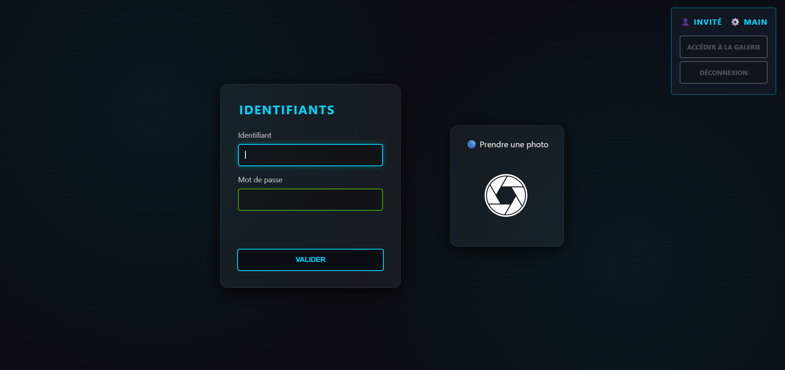

Projet technique réalisé dans le cadre du BUT Réseaux & Télécommunications.
En collaboration avec Thales Alenia Space Cannes.

Imaginer, concevoir et réaliser un système de prise de photos automatique. Le système comporte un site web depuis lequel la prise de photos est possible, ainsi que la visualisation d’une galerie d’images.
Ce projet m’a permis de découvrir l’intégration entre matériel et logiciel, ainsi que l’utilisation d’un Raspberry Pi pour automatiser un système réel. J’ai également renforcé mes compétences en développement web et en programmation Python.